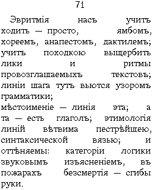
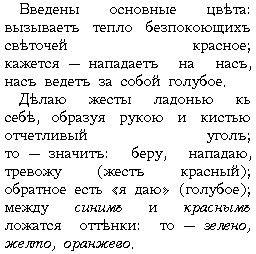
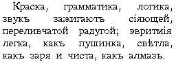

Glossolalia (Section 71)
GLOSSOLALIA

Eurythmy teaches us how to step -- simply, as an iamb, trochee, anapest, dactyl; it teaches us the steps by which to break up the likenesses and rhythms of proclaimed texts; the lines of the walk curl in pattern of grammar; a pronoun is -- this line; and that one is -- a verb; the etymology of the lines spreads its branches in a motley, syntactic calligraphy; and they are shaded with meaning: the categories of logic by sound clarification, in the fires of immortality are -- the bendings of the arm.

The primary colors are introduced: red summons a warmth of restless luminaries; it seems -- it is attacking us; sky blue leads us out behind it.
I make gestures with the palm toward me, forming with my arm and brush a distinctive angle; -- that -- signifies: I take, I attack, I alarm (a red gesture); the opposite is "I give" (blue); between the cyan and crimson lie shades -- these are -- green, yellow, orange.

Color, grammar, logic, sound ignite in a shining, iridescent rainbow; eurythmy is light as a snowflake, bright as the dawn, and pure as a diamond.